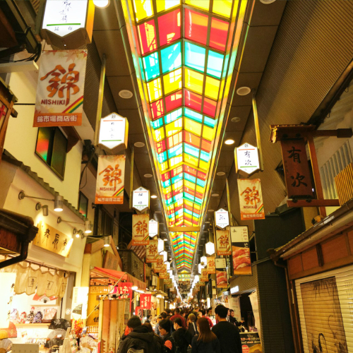

Nishiki Market – Kyoto’s Kitchen of Flavours & Traditional Food Market

Nishiki Market (錦市場) lies in the heart of Kyoto and is affectionately known as “Kyoto’s Kitchen”. Stretching nearly 400 meters, this lively food market is filled with stalls selling fresh seafood, local sweets, pickles, tea, and artisan crafts, offering visitors a sensory feast of taste and culture.
A Food Lover’s Paradise with Deep Roots
Dating back over 400 years, Nishiki Market began as a fish market but evolved into a culinary hub where merchants, chefs, and locals converge. Walking through the narrow alleys you’ll find century-old shops, traditional foods, and the rhythms of daily Japanese life that tourists rarely experience so intimately.
What to Taste & Explore
Don’t miss trying fresh sashimi,
Visitor Information
- 🌸 Location: Central Kyoto, near Nishiki Tenmangu Shrine
- 🌸 Hours: 9:00 AM – 5:30 PM, some stalls open until 7 PM
- 🌸 Admission: Free to enter
- 🌸 Access: Short walk from Shijo Station (Karasuma Line / Hankyu)
Why Visit Nishiki Market?
Nishiki Market is not only about food—it offers a window into Kyoto’s culinary heritage, local daily life, and tastes you won’t find elsewhere. It’s perfect for food lovers, culture seekers, or anyone wanting to taste “real Japan.”
Tags: Nishiki Market, Kyoto cuisine, traditional food market, Tokyo travel extension, Japanese snacks, local food culture, Kyoto sightseeing
Planning to visit Nishiki Market?
To get the most immersive and insightful experience, we recommend booking a certified local private guide from our team. All our guides are licensed professionals officially recognized by the Japanese government, offering personalized tours tailored to your interests. Please contact your selected guide in advance to confirm availability and get expert assistance for your trip.